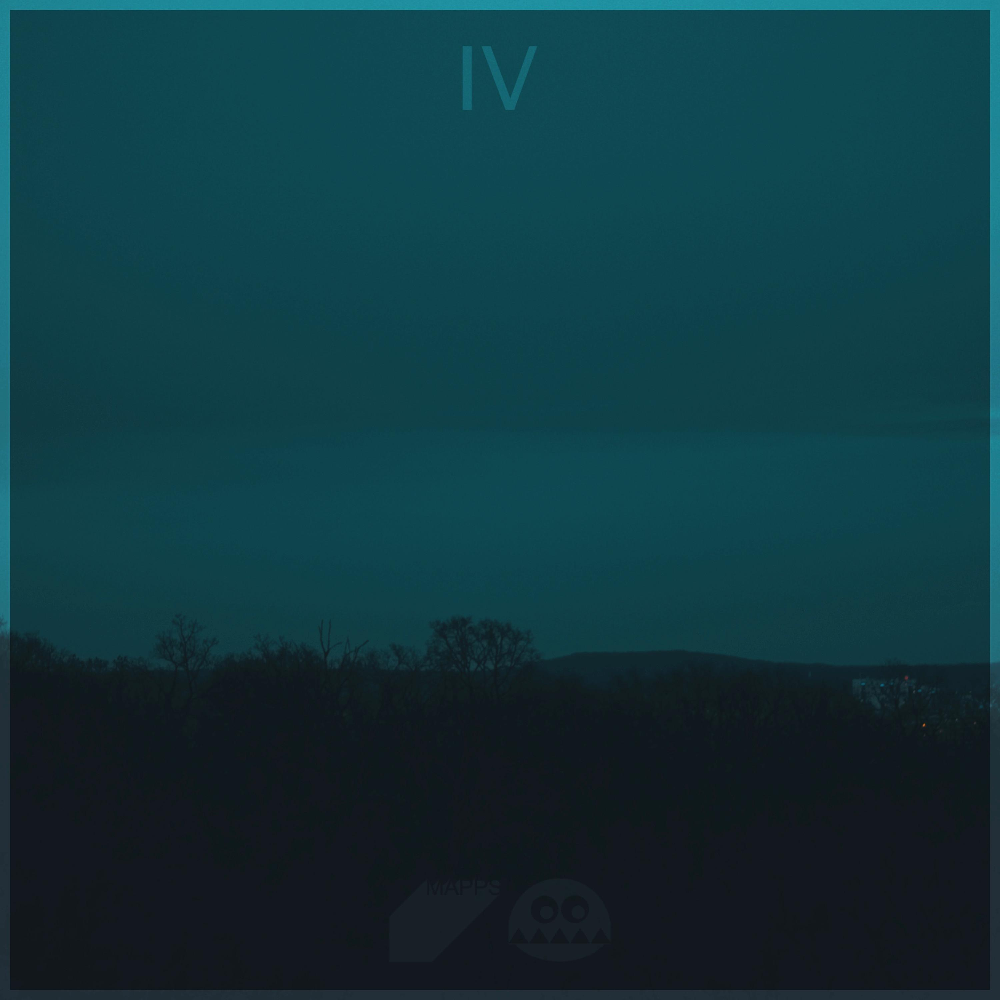

|  | 《IV》 “黑暗中我想到落于海面的雨，浩瀚无边的大海上无声无息地，不为任何人知晓地降落的雨。雨安安静静地叩击海面，鱼们甚至都浑然不觉。”“我一直在想这样的大海，直到有人走来把手轻轻放在我的背上。” ——村上春树 《国境以南太阳以西》 |
| 《Merry Christmas Mr. Lawrence》 这张专辑是2009年经济衰退社会问题凸显的背景下，日本FOR LIFE公司发行的一张以所谓MessageSong为主的合集。MessageSong不仅指政治抗议歌曲，更多的是指担忧社会、有明确意志、不仅是爱情主题的歌曲，所以也包括励志歌曲，想对社会、年轻人说：想要改变，所以歌唱。 |
| 《theme of SSS》 一段段平稳的钢琴旋律叙述着他们不公的命运。当钢琴与突如其来的提琴交织在一起的瞬间、属于他们的命运交响曲奏起。他们开始反抗、久久不能平息心中的不忿。最后、接近尾声的交响曲在一切归落土地之时、高亢的旋律回归到最初柔和的钢琴音、人生便安静地落下帷幕。 |